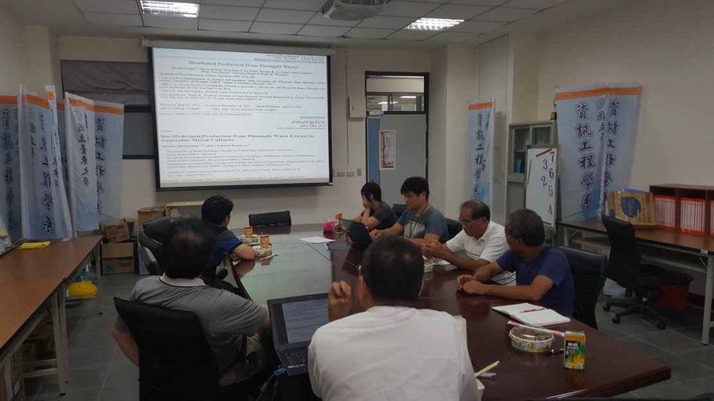

農業剩餘物再利用，提升農業新價值
<107年7月18日>本聯盟邀請到國立虎尾科技大學張耀南教授蒞臨演講。張教授除了提到他的實驗室正在進行的生技研究之外，也闡述如何利用農業剩餘物來增加農作物產品的多元性。張教授的研究成果，包括利用酵母菌活乳酸菌等益生菌種來發酵農業剩餘物（如：黑豆渣、芝麻粕等），開發成天然的清潔用品或保健食品；也因此，改變傳統農業剩餘物的處理流程，也成就了農業產品的多元性與應用性，大大提升農業的新價值。

國立虎尾科技大學生物科技系張耀南教授演講。
(左一為張耀南教授，上方左二為聯盟主持人楊繼江教授，右一為李俊霖教授；下方左一及左二為聯盟會員之廠商負責人。)

國立虎尾科技大學生物科技系張耀南教授演講。張教授講述其農業剩餘物應用及在保健食品開發的研究過程。